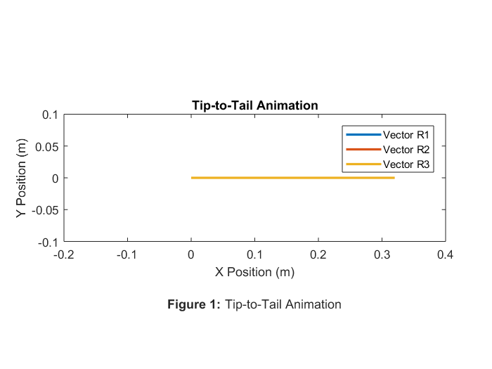
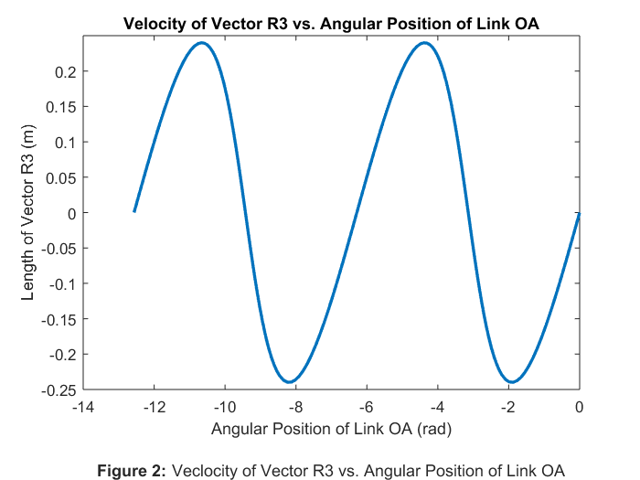
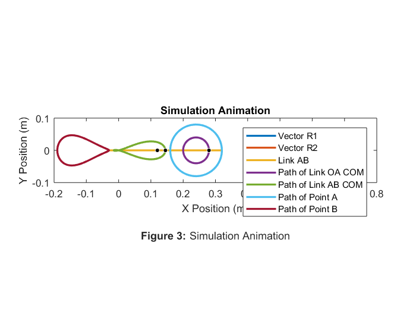

Rahul_Goyal_main Usage and Description
ME 326 Winter 2018 - Laboratory Assignment #5
Author: RAHUL GOYAL
California Polytechnic State University, San Luis Obispo, CA
Date Created: February 13, 2018
Date Modified: February 27, 2018
Description: This script simulates the motion of a slider-crank. Afterwards, it first animates the slider-crank by plotting the vectors tip-to-tail, animates the slider-crank again by using the simulation data. Additionally, it compares the velocity of link AB to the angular position of link OA.
Required Files:
- Simulator.slx - This file uses Simulink to double integrate a MATLAB Function Block which describes the accelerations of the simulation. It outputs the positions as xout, the velocities as vout, the accelerations as aout, and the times as tout with inputs of the MATLAB function and initial conditions.
- link_solver.m - This file contains a function that represents the accelerations of the simulation. It returns x with an input of u.
Still To Do:
- Start!
Contents
Problem Statement
Crank OA rotates clockwise at the constant rate theta-dot = 3 rad/s. The connecting link AB passes through the pivoted collar at C. Note: lAB = 350 mm. Develop a complete kinematic model of the slider-crank mechanism.
Reset
The following was used while debugging.
close all; clear all; clc;
Given Values
The following assigns values given by the problem statement to variables.
% Given Values tdot_2 = -3; % Angular velocity of link OA (rad/s) l_ab = 350/1000; % Length of link AB (m) r_1 = 240/1000; % Length of vector R1 (m) r_2 = 80/1000; % Length of vector R2 (m) theta2_stop = -4*pi; % Theta_2 final (rad) % Set Values t2_0 = deg2rad(0); % Angular position initial of link OA (rad)
Initial Conditions
The following sets the initial conditions of the slider-crank. See the attached file for hand calculations.
% Position Initial Conditions % Length initial of vector R2 (m) [Pythagorean Theorem] r3_0 = hypot(r_1+r_2*cos(t2_0), r_2*sin(t2_0)); % Angular position initial of link OA (rad) [Law of Sines] t3_0 = asin(sin(pi-t2_0)/r3_0 * r_2); % COM[x] initial of link OA (m) x2_0 = r_1 + r_2/2*cos(t2_0); % COM[y] initial of link OA (m) y2_0 = r_2/2*sin(t2_0); % COM[x] initial of link AB (m) x3_0 = r_1 + r_2*cos(t2_0) - l_ab/2*cos(t3_0); % COM[y] initial of link AB (m) y3_0 = r_2*sin(t2_0) - l_ab/2*sin(t3_0); % Position Initial Conditions Matrix x_0 = [r3_0, t3_0, x2_0, y2_0, x3_0, y3_0]; % Velocity Initial Conditions A = [cos(t3_0), -r3_0*sin(t3_0); sin(t3_0), r3_0*cos(t3_0)]; b = [-r_2*tdot_2*sin(t2_0); r_2*tdot_2*cos(t2_0)]; x = A \ b; % Velocity initial of vector R3 (m/s) rdot3_0 = x(1); % Angular velocity initial of link AB (rad/s) tdot3_0 = x(2); % Velocity_G[x] initial of link OA (m/s) xdot2_0 = -tdot_2 * r_2/2*sin(t2_0); % Velocity_G[y] initial of link OA (m/s) ydot2_0 = tdot_2 * r_2/2*cos(t2_0); % Velocity_G[x] initial of link AB (m/s) xdot3_0 = -tdot3_0 * y3_0; % Velocity_G[x] initial of link AB (m/s) ydot3_0 = tdot3_0 * x3_0; % Velocity Initial Conditions Matrix v_0 = [rdot3_0, tdot3_0, xdot2_0, ydot2_0, xdot3_0, ydot3_0];
Simulate the Slider-Crank Using Simulink
The following calls the Simulink file Simulator.slx, which outputs the positions as xout, the velocities as vout, the accelerations as aout, and the times as tout with link_solver.m as the input for the MATLAB Fuction, tdot_2, t2_0, v_0, and x_0 as the inputs for the initial conditions, and theta2_stop as the input for the final conditions.
sim('Simulator.slx');
Tip-to-Tail Animation
The following animates the slider-crank by plotting the vectors tip-to-tail. Thus, the extension of link AB is not plotted. If a constant "pause" is used, this animation displays only kinematic position, and not kinematic velocity, because in reality the time step between each frame varies.
% Cartesian Coordinates of Vector R1 r1_x = [0, r_1]; r1_y = [0, 0]; for t = 1:length(tout) t_2 = t2_0 + tdot_2 * tout(t); % Angular position of link OA (m) % Cartesian Coordinates of Vector R2, Link AB (tip-to-tail) r2_x = [r1_x(end), r1_x(end) + r_2*cos(t_2)]; r2_y = [r1_y(end), r1_y(end) + r_2*sin(t_2)]; r3_x = [r2_x(end), r1_x(1)]; r3_y = [r2_y(end), r2_y(1)]; % Plot the vector links plot(r1_x, r1_y, r2_x, r2_y, r3_x, r3_y, 'LineWidth', 2); % Keep the frame consistent axis equal; axis([-0.2, 0.4, -0.1, 0.1]); % Calculate the time step and pause accordingly if t ~= length(tout) % Prevent index error % Calculate the time step (s) t_step = tout(t+1) - tout(t); pause(t_step); % Assume negligible processing time end end % Plot labeling (last frame) title('Tip-to-Tail Animation'); xlabel({'X Position (m)' '' % Figure label '\bfFigure 1: \rmTip-to-Tail Animation'}); ylabel('Y Position (m)'); legend('Vector R1', 'Vector R2', 'Vector R3');
Velocity of Vector R3 vs. Angular Position of Link OA
The following plots the velocity of vector R3 as a function of the angular position of link OA.
% Easy access to... rdot_3s = vout(:, 1); % Velocities of vector R3 (m/s) t_2s = tdot_2*tout; % Angular positions of link OA (rad) % Plot plot(t_2s, rdot_3s, 'LineWidth', 2); title('Velocity of Vector R3 vs. Angular Position of Link OA'); xlabel({'Angular Position of Link OA (rad)' '' % Figure label '\bfFigure 2: \rmVeclocity of Vector R3 vs. Angular Position of Link OA'}); ylabel('Length of Vector R3 (m)'); % Find the time index of when the angular position of link OA is 140 degrees t_140 = length(tout); for t = 1:length(tout); % Best error (so far) best_error = abs(t_2s(t_140)-(deg2rad(140)-2*pi)); % Current error curr_error = abs(t_2s(t)-(deg2rad(140)-2*pi)); % If the current error is less than the best error (so far)... if curr_error < best_error t_140 = t; % Update the best error time index end end % Print results to console fprintf("The velocity of link AB "); fprintf("when the angular position of link OA is 140 degrees is: "); fprintf("\n"); fprintf(num2str(rdot_3s(t_140))); fprintf(" m/s."); fprintf("\n"); [~, idx] = max(vout(:, 1)); fprintf("The maximum value of the velocity of link AB is: "); fprintf("\n"); fprintf(num2str(rdot_3s(idx))); fprintf(" m/s."); fprintf("\n"); fprintf("The corresponding angular position of link OA is: "); fprintf("\n"); fprintf(num2str(t_2s(idx)+2*pi)); fprintf(" radians."); fprintf("\n");
The velocity of link AB when the angular position of link OA is 140 degrees is: 0.19633 m/s. The maximum value of the velocity of link AB is: 0.24 m/s. The corresponding angular position of link OA is: -4.3786 radians.
Simulation Animation
The following animates the slider-crank by using the simulation data.
% Cartesian Coordinates of COM of Vector R1 x_1 = (r1_x(end)-r1_y(1))/2; y_1 = (r1_y(end)-r1_y(1))/2; % Easy access to... r_3 = xout(:, 1); % Lengths of vector R3 (m) t_3 = xout(:, 2); % Angular positions of link AB (rad) x_2 = xout(:, 3); % COMs[x] of link OA (m) y_2 = xout(:, 4); % COMs[y] of link OA (m) x_3 = xout(:, 5); % COMs[x] of link AB (m) y_3 = xout(:, 6); % COMs[y] of link AB (m) % Cartesian Coordinates of Point A a_x = r1_x(end)+r_2*cos(t2_0+tdot_2*tout); a_y = r1_y(end)+r_2*sin(t2_0+tdot_2*tout); % Cartesian Coordinates of Point B b_x = a_x - l_ab*cos(t_3); b_y = a_y - l_ab*sin(t_3); for t = 1:length(tout) t_2 = t2_0 + tdot_2*tout(t); % Angular position of link OA (m) % Cartesian Coordinates of Vector R2 r2_x = [r1_x(end), r1_x(end) + r_2*cos(t_2)]; r2_y = [r1_y(end), r1_y(end) + r_2*sin(t_2)]; % Cartesian Coordinates of Link AB lab_x = [r2_x(end), r2_x(end) - l_ab*cos(t_3(t))]; lab_y = [r2_y(end), r2_y(end) - l_ab*sin(t_3(t))]; % Plot the links, COMs, COM paths plot(r1_x, r1_y, ... % Vector R1 r2_x, r2_y, ... % Vector R2 lab_x, lab_y, ... % Link AB x_2(1:t), y_2(1:t), ... % Path of link OA COM x_3(1:t), y_3(1:t), ... % Path of link AB COM a_x(1:t), a_y(1:t), ... % Path of point A b_x(1:t), b_y(1:t), ... % Path of point B 'LineWidth', 2); % Line Properties % COM of Vector R1 viscircles([x_1, y_1], 0.0025, 'Color', 'k'); % COM of Link OA viscircles([x_2(t), y_2(t)], 0.0025, 'Color', 'k'); % COM of Link AB viscircles([x_3(t), y_3(t)], 0.0025, 'Color', 'k'); % Keep the frame consistent axis equal; axis([-0.2, 0.8, -0.1, 0.1]); % Calculate the time step and pause accordingly if t ~= length(tout) % Prevent index error % Calculate the time step (s) t_step = tout(t+1) - tout(t); pause(t_step); % Assume negligible processing time end % Plot labeling (last frame) title('Simulation Animation'); xlabel({'X Position (m)' '' % Figure label '\bfFigure 3: \rmSimulation Animation'}); ylabel('Y Position (m)'); legend('Vector R1', 'Vector R2', 'Link AB', ... 'Path of Link OA COM', 'Path of Link AB COM', ... 'Path of Point A', 'Path of Point B'); end